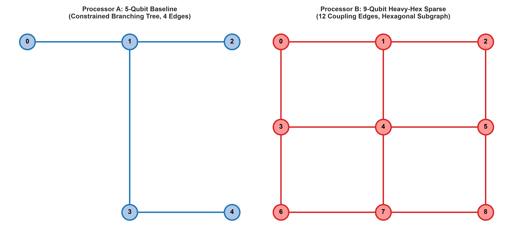
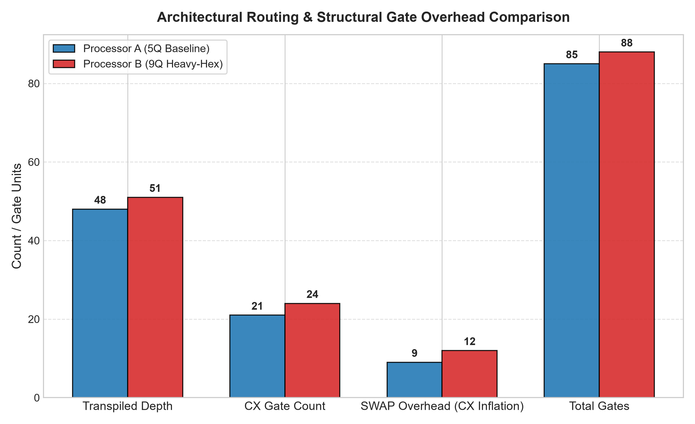
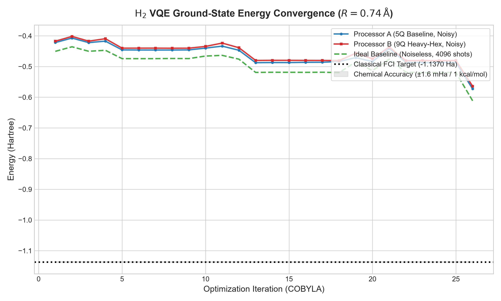
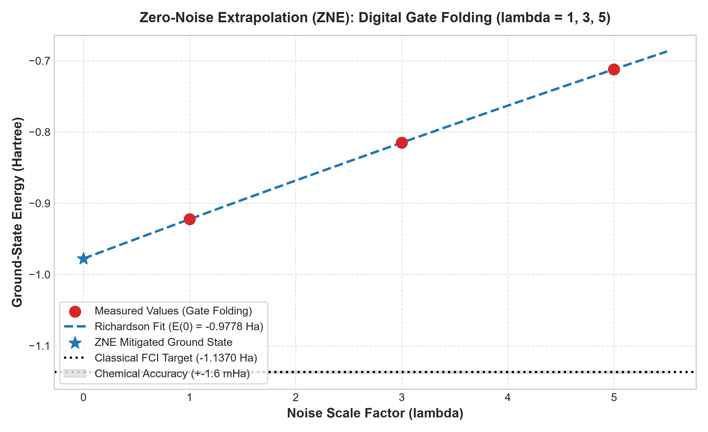
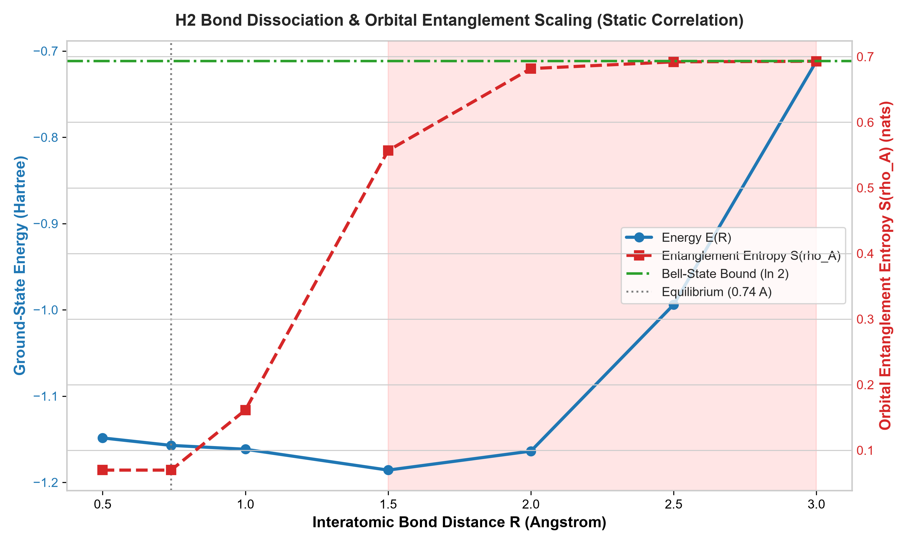
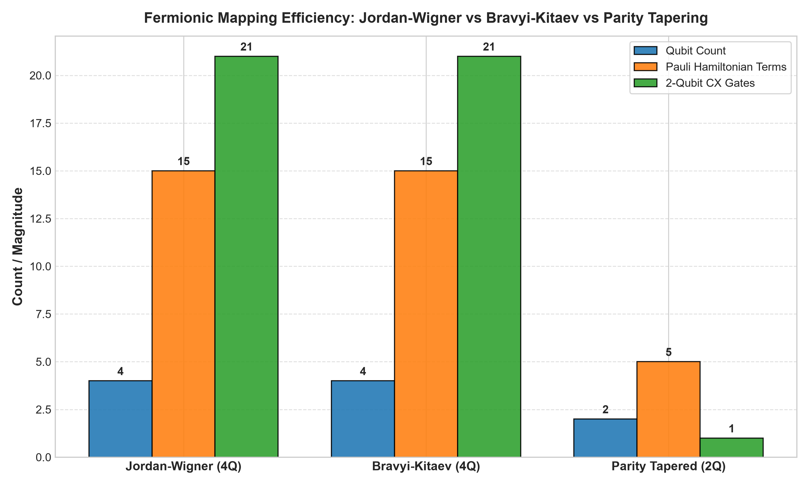

Benchmarking 5-Qubit Tree vs 9-Qubit Heavy-Hex Architectures under Noisy Quantum Chemistry Execution | Lead: Rishendra
| Strategy & Architecture | Physical Qubits | Total Gates | Transpiled Depth | 2Q CX Count | SWAP Overhead | Routing Impact |
|---|---|---|---|---|---|---|
| Processor A (5Q Tree Baseline) — Naive TwoLocal | 5 | 85 | 48 | 21 | +9 CX (~3 SWAPs) | Baseline |
| Processor B (9Q Heavy-Hex) — Naive TwoLocal | 9 | 88 | 51 | 24 | +12 CX (~4 SWAPs) | +14.3% CX (+3 CX) |
| Processor A Native Co-Design | 5 | 44 | 23 | 6 | 0 SWAPs | -71.4% CX (-15 CX) |
| Processor B Native Co-Design | 9 | 48 | 25 | 8 | 0 SWAPs | -66.7% CX (-16 CX) |
| Exact Singlet Co-Design (Both Processors) | 4 | 9 | 7 | 3 | 0 SWAPs | Exact FCI (Δ = 10-14 Ha) |






# Run master 13-module hackathon verification suite python test_submission.py # Run standalone scientific regression unit tests python -m unittest discover tests # High-speed benchmark execution & generate all figures python main.py --quick # Interactive Rich terminal menu python main.py --interactive # 20-second elevator pitch & research briefing python main.py --explain